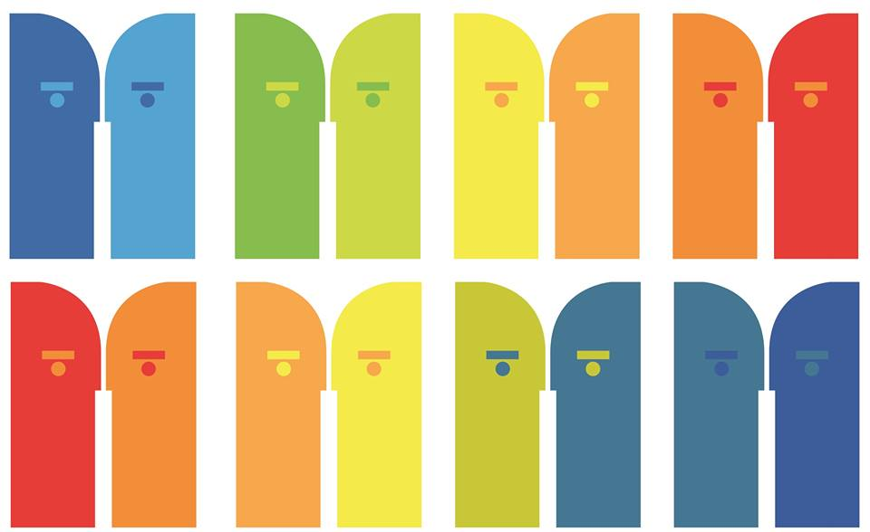

Fortalécete LGBTI: Proceso de Fortalecimiento de Proyectos Juveniles LGBTI
Junio 2014
Participé en Fortalécete LGBTI, proceso intensivo organizado por la agrupación Jóvenes LGBT México, la Red Nacional de Jóvenes Activistas LGBTIQ y la Red de Madres Lesbianas en México, en colaboración con la Comisión Nacional de Derechos Humanos, la Embajada de Estados Unidos en México y el Bureau of Educational and Cultural Affairs.
Segundo Seminario Internacional de Política y Filosofía. Vigilancia y resistencia: las políticas de la multiplicidad
Septiembre 2013
Fui ponente en el Segundo Seminario Internacional de Política y Filosofía, realizado en la Facultad de Ciencias Políticas y Sociales.